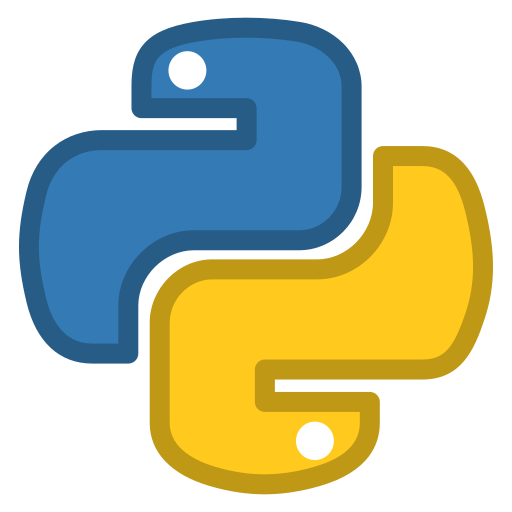
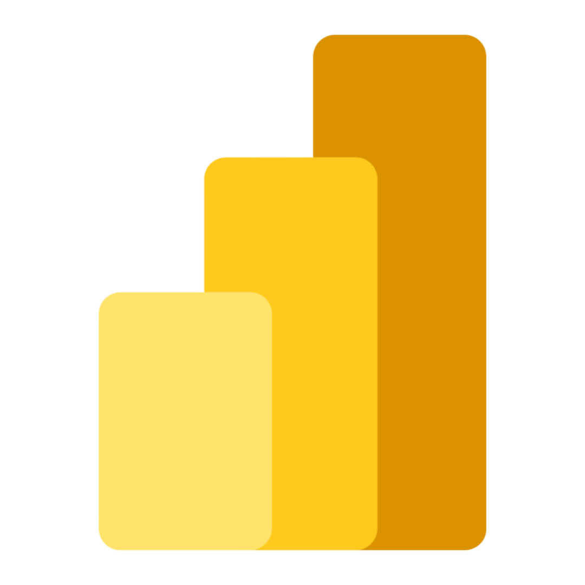
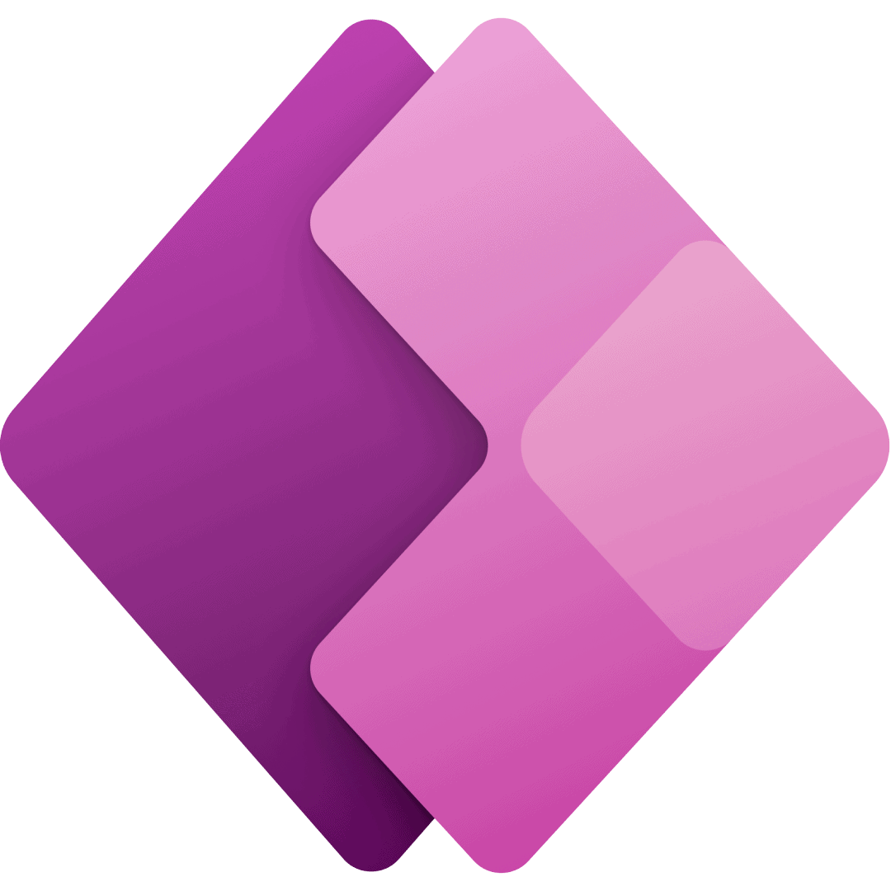
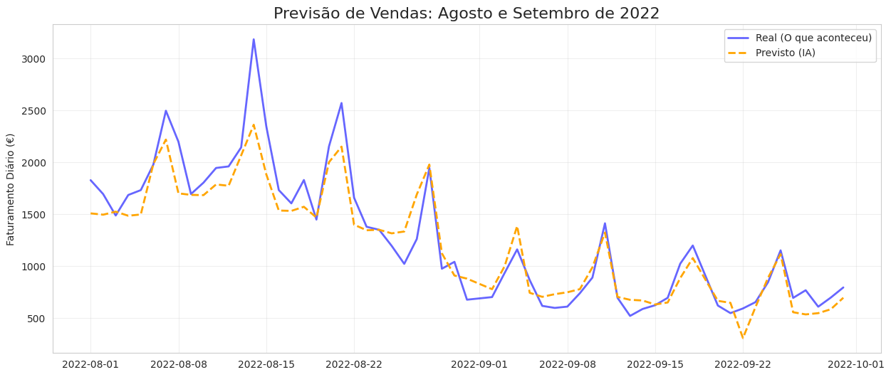
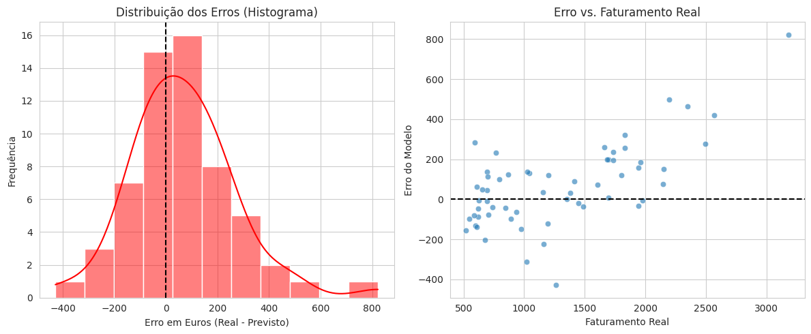
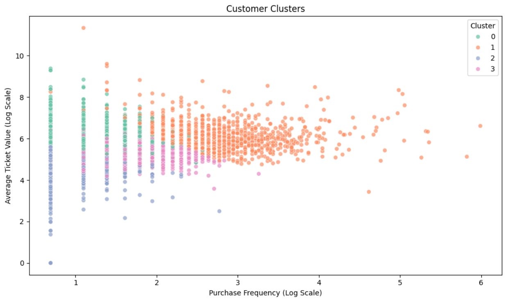
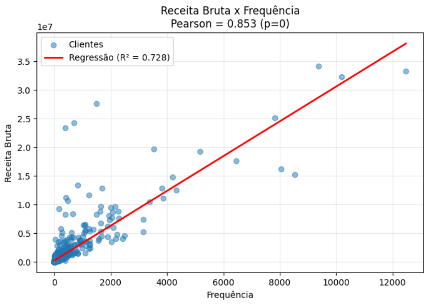

Sobre Mim
Estudante de Ciência de Dados e estagiário de tecnologia. Apaixonado por análise de dados, machine learning e automações, com experiência em Python, SQL, Power BI, Power Apps, Power Automate e desenvolvimento de soluções eficientes.



Modelagem & Insights em Destaque

Previsão de Faturamento com IA
Modelagem de séries temporais comparando valores reais e previstos para otimização de planejamento de vendas.

Diagnóstico e Análise de Resíduos
Avaliação da distribuição de erros e dispersão em relação ao faturamento real para validação do modelo.

Segmentação de Clientes (K-Means)
Agrupamento não-supervisionado em escala logarítmica analisando frequência de compra e ticket médio.

Receita Bruta x Frequência de Compra
Análise estatística de correlação (Pearson = 0,853) entre frequência de compra e receita bruta (R² = 0,728).
Aplicações Corporativas & Automações
Sistemas corporativos desenvolvidos para otimizar rotinas internas, gerenciar inventários e controlar fluxos de aprovação na Unimil.

Hub de Brindes (Visão Geral)
Menu centralizado dividindo os módulos de Nova Solicitação, Controle de Estoque e Aprovações & Saídas.

Módulo de Nova Solicitação
Interface interativa com controle dinâmico de quantidades baseada no estoque disponível em tempo real.

Controle de Estoque & Fornecedores
Gestão de inventário integrando dados detalhados de fornecedores, e-mails de contato e níveis de estoque.

Painel de Aprovação & Saídas
Gestão de pedidos pendentes detalhando departamento, motivo da visita e itens solicitados para tomada de decisão rápida.
Projetos no Kaggle
Clusterização de Clientes (K-Means)
Modelo em Python voltado para segmentação e agrupamento de clientes aplicando algoritmos de Machine Learning.
Vendas Diárias de uma Padaria Francesa
Projeto de análise de dados e previsão explorando séries temporais e visualizações avançadas.
Exploração e Análise de Dados de Crédito com SQL
Análise exploratória utilizando consultas SQL avançadas para extração de insights e padrões em dados de crédito.
Análise de Dados de Inadimplentes
Estudo detalhado e tratamento de dados voltado para identificação de perfis e fatores associados à inadimplência.
Projetos no GitHub
Credit Score
Análise e modelagem preditiva para avaliação e concessão de risco de crédito.
Análise de Telemarketing
Estudo exploratório e modelagem de dados voltados para conversão de campanhas de telemarketing.
Análise de Campanha de Telemarketing
Modelagem e avaliação detalhada do desempenho de campanhas para otimização de conversão e engajamento.
Previsão de Renda
Desenvolvimento de modelos de regressão para análise preditiva de renda individual.
Repositório de Estudos (EBAC)
Compilado de tarefas, exercícios práticos e projetos desenvolvidos ao longo da formação em dados.
Contato & Redes
Acompanhe meus códigos e produções: